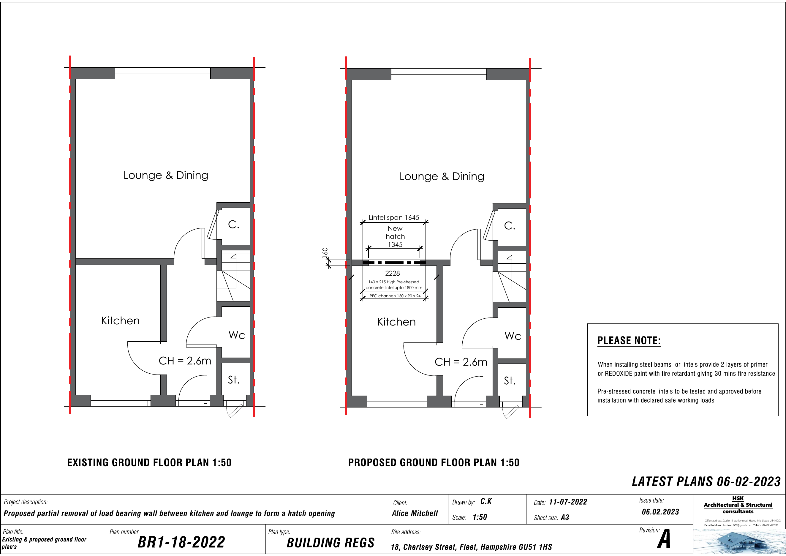
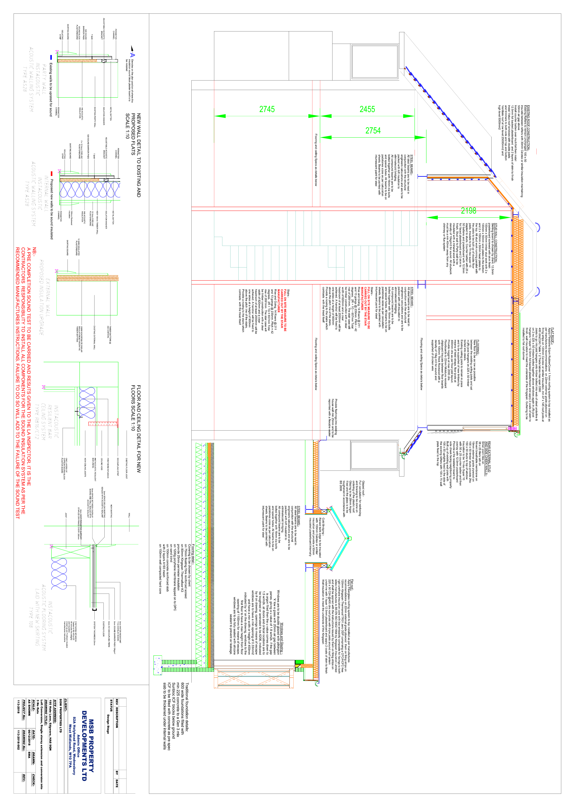

House extensions
Concept layouts, planning-stage drawings, building regulations information and technical coordination for rear, side and wraparound extensions.
Premium architectural services + engineering for architecture
ArchiProject helps homeowners, developers and design teams turn extensions, loft conversions and residential ideas into clear, coordinated and build-ready technical information.

Many projects fail because design, structure and construction decisions are treated separately. ArchiProject positions the technical strategy early, reducing uncertainty before money is spent on site.
Services
Clear, premium, technically aware support for residential and small development work.
Concept layouts, planning-stage drawings, building regulations information and technical coordination for rear, side and wraparound extensions.
Space planning, roof strategy, structure coordination, stair positioning and compliance-led design decisions.
Support for beams, lintels, openings, padstones, foundations and practical construction details.
Technical drawings and notes prepared to communicate the intended construction clearly to builders and approval bodies.
Review of drawings, dimensions, structural implications, buildability issues and coordination gaps before site work begins.
Visualisation, model-led thinking, CYPE-informed workflows and AI-assisted project documentation without replacing professional review.
Selected technical material
These visuals are used as representative technical material for a premium portfolio-style landing page.


Process
We define the project scope, site limitations, structural risks and approval route.
We establish layouts, openings, access, roof strategy and buildability logic.
We coordinate drawings, structural requirements and construction notes.
You receive clearer information for approvals, pricing, contractor coordination and site decisions.
SEO + GEO positioning
The page is structured around search phrases clients actually use when they need practical project help: architectural services, structural calculations, building regulations drawings, house extensions and loft conversions.
Questions
Yes. Early technical clarity helps you understand options, risks and likely construction implications before committing to a build route.
Yes. The service includes technical drawings and notes intended to support Building Regulations coordination and construction communication.
Yes. ArchiProject can provide technical support, structural coordination and review input for homeowners, developers and design teams.
Start with clarity
For extensions, loft conversions, technical drawings, structural calculations or design coordination, call now or use the information bot.